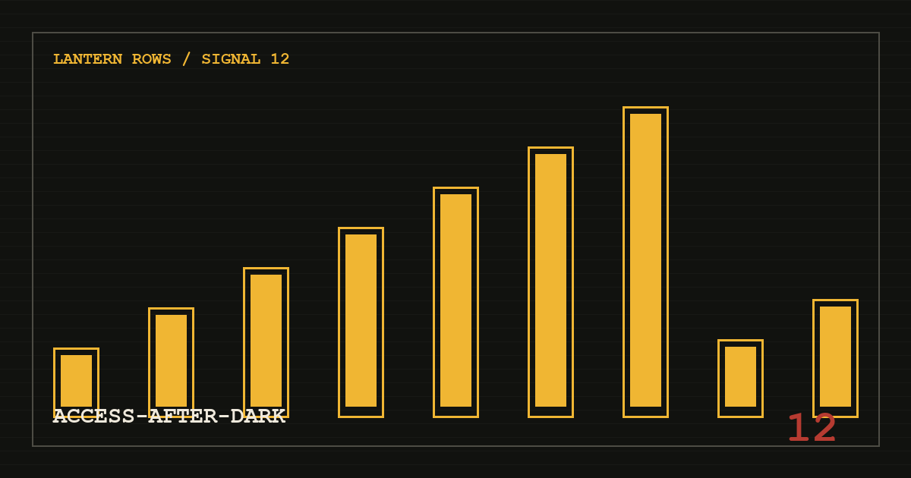

SIGNAL / 12 · 通行票根
__ACCESS_TITLE__
__ACCESS_DECK__
SIGNAL / 12 · 通行票根
__ACCESS_DECK__

__ACCESS_OPENING__
__INVITE_CODE____AFFILIATE_LINK_LABEL____ACCESS_SECTION_1_BODY_1__
__ACCESS_SECTION_1_BODY_2__
__ACCESS_SECTION_2_BODY_1__
__ACCESS_SECTION_2_BODY_2__
__ACCESS_SECTION_3_BODY_1__
__ACCESS_SECTION_3_QUOTE__
__ACCESS_SECTION_3_BODY_2__
__ACCESS_SECTION_4_BODY_1__
__ACCESS_SECTION_4_BODY_2__
__ACCESS_SECTION_5_BODY_1__
__ACCESS_SECTION_5_BODY_2__
__FAQ_ACCESS_AFTER_DARK_1_ANSWER__
__FAQ_ACCESS_AFTER_DARK_2_ANSWER__
__FAQ_ACCESS_AFTER_DARK_3_ANSWER__